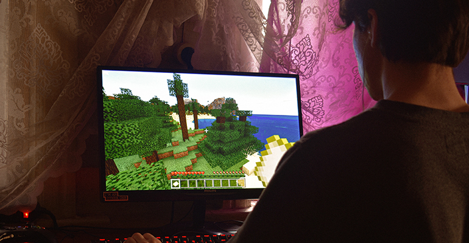

Loading
Kinematics is the subfield of phyics that deals with the motion of a body or a system of bodies. However, kinematics does not consider the forces that produce the motion. In our curriculum, we learned about motion in one dimension, motion in two dimensions, projectile motion, and relative motion.
To describe motion, we use terms including distance, displacement, position, speed, velocity, and acceleration. In terms of the mathematical quantities used to describe motion, we usescalars(quantities that have a magnitude only) andvectors(quantities that have magnitude and direction).
In this post, we will be focusing on projectile motion and relative motion.
An example of projectile motion is in football, when a player kicks a ball upward at an angle. The ball rises, eventually coming back down due to the acceleration due to gravity. The ball’s trajectory makes a parabolic curve, and acts like a projectile.
The properties of projectile motion include:
Thehorizontal componentof acceleration for a projectile is zero
Thevertical componentof acceleration for a projectile is constant (it is the acceleration due to gravity)
Although the horizontal component and vertical component of a projectile are independent of one another, they share the same time
In the above video, both balls are dropped from the same height at the same time. One of the balls has an initial horizontal velocity, while the other does not. As we can see, both balls hit the ground at the same time. This reinforces the fact that the horizontal component and the vertical component of a projectile are independent of each other. The only acceleration present in this case is the vertical acceleration due to gravity and therefore, both balls hit the ground at the same time.
Other examples of projectile motion include the motion of a ball in sports, meteors entering the earth’s atmosphere, and missiles (unmanned vehicles often used in warfare).
Imagine that you are sitting in a bus that is moving forward. You feel that you are stationary inside the bus, and you look to the left and you see a car next to you that appears to be stationary.
Now imagine that you are standing stationary on the sidewalk. When you look towards the road, you see the bus and the car both moving at the same speed.
This is an example ofrelative motion.When you are in the bus, you are in one frame of reference, and when you are on the ground, you are in another frame of reference. Aframe of referenceis a system relative to which motion is observed, andrelative velocityis the velocity of an object relative to a specific frame of reference.
In this case, the velocity of the car relative to the person on the sidewalk would be the velocity of the car relative to the bus + the velocity of the bus relative to the person on the sidewalk.
The general equation for this is:
Relative motion is an important concept to keep in mind because it allows us to understand why objects appear to move differently depending on the frame.
One career in which kinematics is used is that of a physics programmer. Physics programmers develop software and write code that uses the laws of physics to create effects that would be similar to real life.
Physics programmers need to understand the laws of physics and be able to apply them to game design. Physics programmers are responsible for simulating actions such as crashes, collisions, gravity, moving objects, and fluids. Understanding and applying kinematics is crucial to the success of a video game or experience, and therefore, it is necessary for physics programmers to have a deep understanding of this topic.